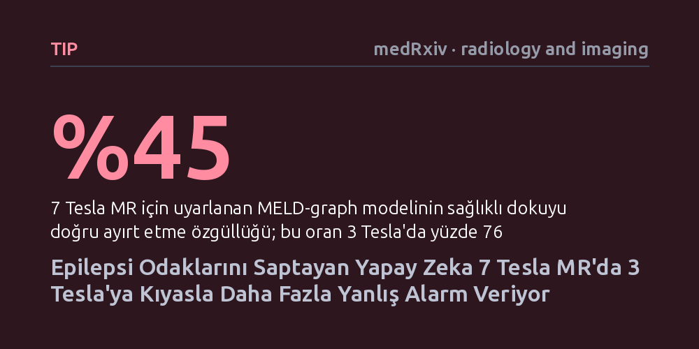

TIP · medRxiv · radiology and imaging · 2026-10-12
Araştırmacılar, dirençli epilepsiye yol açan beyin lezyonlarını saptayan MELD-graph yapay zekasının yüksek manyetik alanlı 7 Tesla MR'da nasıl çalıştığını 23 hastada inceledi. Algoritmanın lezyon yakalama duyarlılığı korunsa da 7 Tesla görüntülerinde yanlış alarmlar belirgin şekilde arttı ve özgüllük yüzde 76'dan yüzde 45'e geriledi.
Daha güçlü görüntüleme teknolojilerine geçmenin yapay zekanın tanı başarısını kendiliğinden artırmadığını, aksine yeni cihazlara özel uyarlama yapılmadığında hatalı alarmlarla hekimleri yanıltabileceğini gösteriyor.

İlaca dirençli fokal epilepsi hastalarında nöbetleri durdurmanın en etkili yolu, beyinde nöbete kaynaklık eden anormal dokunun cerrahi müdahaleyle çıkarılmasıdır. Bu durumun en sık karşılaşılan nedenlerinden biri "odak kortikal displazisi" (FCD) adı verilen ve beyin kabuğunun gelişimsel bir bozukluğu olan lezyonlardır. Ancak bu lezyonlar standart manyetik rezonans (MR) görüntülerinde sıklıkla son derece silik ve belirsizdir; deneyimli nöroradyologların gözünden dahi kaçabilir.
Bu klinik açmazı aşmak amacıyla geliştirilen açık kaynaklı "MELD-graph" yazılımı, beyin yüzey morfolojisini evrişimli sinir ağlarıyla birleştirerek şüpheli lezyonları otomatik olarak tespit eder. Ne var ki bu yapay zeka aracı, geçmişte yaygın olarak kullanılan 1,5 ve 3 Tesla gücündeki MR tarayıcılarının verileriyle eğitilmiştir. Son yıllarda klinik kullanıma giren 7 Tesla gibi ultra yüksek alanlı MR cihazları ise çok daha ayrıntılı görüntüler sunsa da, yapay zekanın alışık olmadığı farklı kontrast ve doku özellikleri barındırır. Ortadaki temel soru şudur: Daha güçlü bir mikroskop görevi gören 7 Tesla MR'a geçildiğinde, mevcut yapay zeka aynı güvenilirlikle çalışmaya devam edebilir mi?
Araştırmacılar, bu soruyu yanıtlamak için dört farklı epilepsi merkezinden toplanan verileri bir araya getirdi. Çalışmaya, odak kortikal displazisi teşhisi konmuş 23 hasta (6'sında lezyon cerrahi doku incelemesiyle kesinleşmiş, 17'sinde ise radyolojik olarak tanımlanmış) ile 39 sağlıklı kontrol bireyi dahil edildi. En kritik nokta, her katılımcının hem 3 Tesla hem de 7 Tesla MR tarayıcılarında eşzamanlı olarak görüntülenmiş olmasıydı; böylece doğrudan bire bir karşılaştırma imkanı doğdu.
Uzman radyologların elle çizdiği lezyon sınırları referans kabul edilerek MELD-graph algoritması üç farklı senaryoda çalıştırıldı: Standart 3 Tesla görüntüleri, 7 Tesla görüntüleri üzerinde doğrudan varsayılan algoritma ve 7 Tesla'nın kendine has manyetik alan bozulmalarını düzelten özel uyarlamalar (gelişmiş kafatası ayıklama, alt milimetrik rekonstrüksiyon ve manyetik alan düzeltmesi). Ayrıca tarayıcılar arası teknik farklılıkları dengelemek amacıyla "ComBat" adı verilen veri uyumlaştırma yöntemi de denkleme katıldı.
Elde edilen sonuçlar, yüksek manyetik alanın yapay zeka açısından beklenmedik bir tuzak barındırdığını ortaya koydu. Uyumlaştırma uygulandığında, lezyonları yakalama duyarlılığı 3 Tesla'da yüzde 65 (23 hastanın 15'i) iken, 7 Tesla'nın varsayılan sürümünde yüzde 48'e (11/23), özel uyarlanmış sürümünde ise yüzde 52'ye (12/23) ulaştı. Standart 3 Tesla görüntülerinde lezyonu hiç fark edilemeyen 8 hastanın 3'ünde lezyon 7 Tesla sayesinde yapay zeka tarafından yakalanabildi.
Ancak tablonun asıl çarpıcı kısmı özgüllük, yani sağlıklı dokuyu ayırt edebilme oranında belirdi. 3 Tesla'da yüzde 76 olan özgüllük, 7 Tesla'nın varsayılan sürümünde yüzde 39'a, uyarlanmış sürümünde ise ancak yüzde 45'e çıkabildi. Algoritma, 7 Tesla görüntülerinde özellikle beynin taban temporal loblarında çok sayıda asılsız lezyon uyarısı (yanlış pozitif) verdi. Hatta klinik pratikte lezyonları daha net göstermesi beklenen FLAIR sekansının 7 Tesla'ya eklenmesi, yanlış alarm sayısını düşürmek bir yana daha da artırdı.
Bu bulgular, yapay zekada "alan kayması" (domain shift) olarak bilinen olguyu net bir biçimde örnekliyor. Bir yapay zeka modelini daha kaliteli ya da daha yüksek çözünürlüklü bir cihaza taşımak, modelin başarısını kendiliğinden yükseltmez. 7 Tesla tarayıcıların yarattığı yüksek sinyal kontrastı ve mikromimari detaylar, modelin daha önce hiç karşılaşmadığı doku varyasyonlarını şüpheli lezyon sanmasına yol açmaktadır.
Yazarlar, 7 Tesla için geliştirdikleri ve açık kaynak olarak paylaştıkları uyarlama boru hattının segmentasyon hatalarını azalttığını, ancak klinik kullanımda dikkatli olunması gerektiğini vurguluyor. 7 Tesla MR'da çalışan yapay zeka araçları, zorlu vakalarda radyologlara rehberlik edebilecek potansiyele sahip olsa da, ürettiği işaretlerin cerrahi kararlar öncesinde mutlaka deneyimli bir hekim gözüyle dikkatle doğrulanması gerekmektedir.